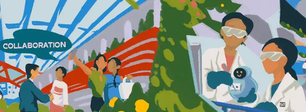
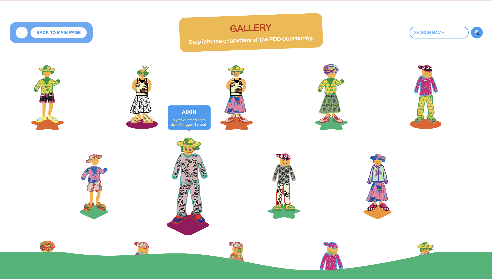
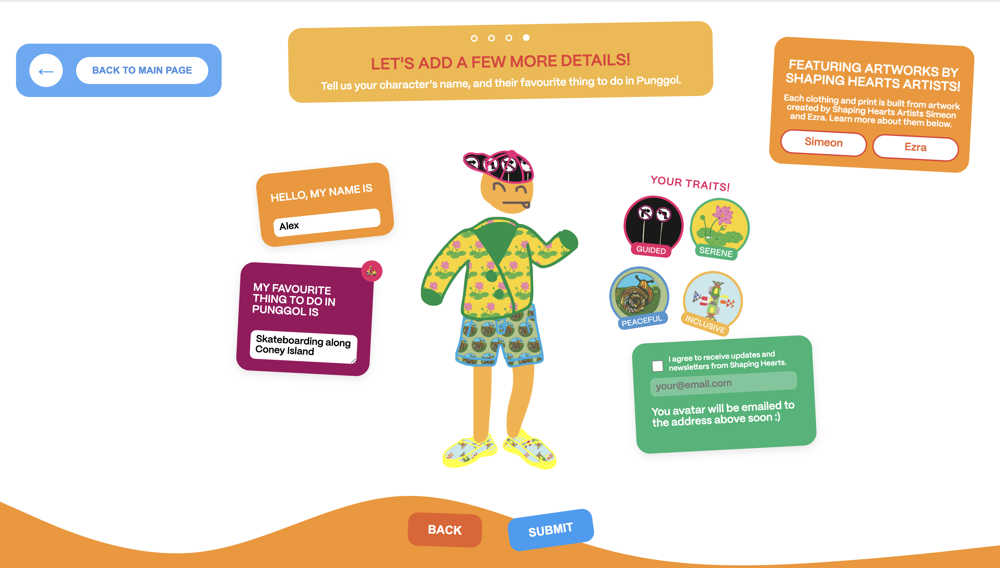
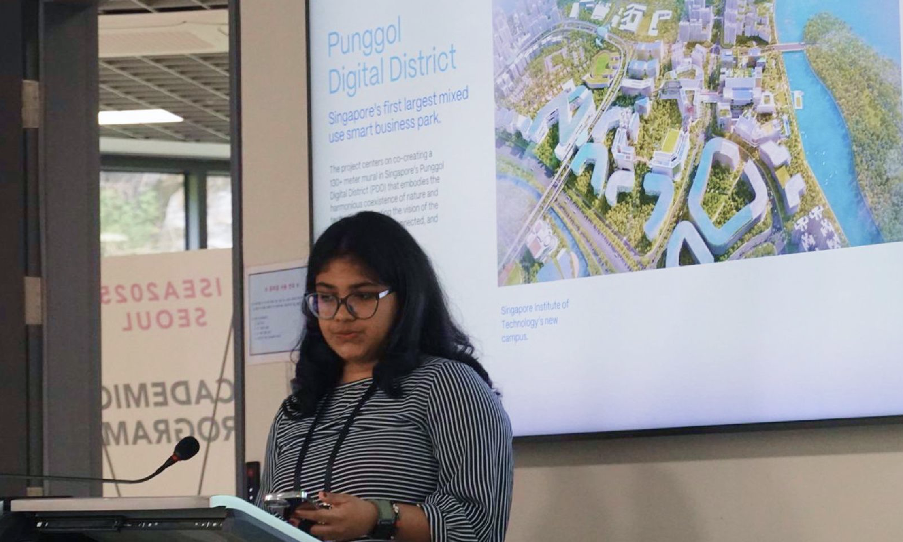
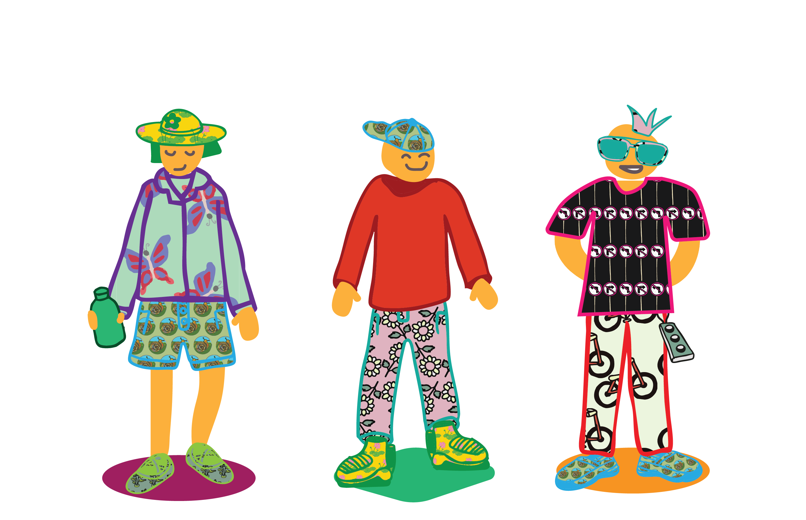

ADITI
NETIAN
People of PDD
Co-Creating an Inclusive Mural for the Punggol Digital District
conditional design,
participatory design,
interactive experiences
Project Lead: Aditi
Neti
Partners: DF@SIT, JTC, NECDC
The Design Factory at the Singapore Institute of Technology (DF@SIT), situated in innoHub, is an applied
innovation centre that provides innovation as a service to Singapore’s ecosystem. Working at the intersection of
design, technology, and community, DF@SIT applies creative methods and experimental technologies to enable
collaboration across sectors.
BACKGROUND
When SIT moved to its new campus in the Punggol Digital District (PDD), it created a shared space where
academia, industry, and the community could naturally interact. Developed jointly by JTC Corporation and SIT,
PDD is Singapore’s first integrated district that brings together a university, a business park, and public
community areas. With more than 45,000 people passing through each day, the district acts as a real-world
testbed for new ideas, collaborations, and community-driven initiatives.
At the centre of this district is a 130-metre mural wall along the community promenade. Commissioned by JTC with
support from the North East Community Development Council (NECDC), the mural was created to reflect inclusivity
and a shared community identity. DF@SIT led the mural’s concept development and digital engagement plan,
collaborating closely with artists with disabilities from Shaping Hearts, Singapore’s largest inclusive arts
festival.

CONCEPT
Two key artists, Simeon Tan Rui En and Ezra Chan Yi, contributed their distinct artistic styles to the project.
To support their collaboration, the DF@SIT team used conditional, instructional, and generative art methods.
Through guided design exercises and participatory workshops, Simeon and Ezra (together with their
caregivers) responded to prompts related to technology, community, and connection. These structured sessions
provided accessible ways for the artists to express their ideas.
Caregivers also took part as co-creators, using exercises that encouraged open dialogue and built mutual trust.
Together, the process produced more than 60 original artworks, which now serve as the visual foundation of the
mural.
VISIT MICROSITE→
PEOPLE OF PDD
To broaden participation beyond the studio, DF@SIT created a digital platform called People of PDD
(peopleofpdd.sg). The site allows the public to design their own avatars using shapes and textures drawn from
Simeon and Ezra’s original artworks. Each avatar is assigned traits connected to the same keyword prompts that
guided the artists—capturing the values reflected in both the mural and the district.
Avatars created on the platform will be woven into the physical mural and later enhanced through AR. By scanning
QR codes along the wall, visitors will be able to see community-made characters and animations layered onto the
artwork, adding a digital dimension to the mural experience.
TRY
THE WEBSITE YOURSELF→


Community Engagement
The website was introduced during community engagement sessions, where participants could name their avatars,
print them as postcards, and contribute them to a growing digital mural. Across its first two activations, more
than 450 people took part—including residents, students, and corporate groups attending Heartland National Day
events and community centre programmes.
The project was also showcased to Deputy Prime Minister Gan Kim Yong, Minister of State Sun Xueling, and Senior
Parliamentary Secretary Baey Yam Keng, who expressed strong support for its creative and inclusive approach.
ISEA 2025
The People of PDD case study was presented at ISEA 2025, the International Symposium on Electronic Art held in
Korea in May 2025, under the Community Engagement track. The presentation highlighted how participatory design,
inclusive art practices, and digital prototyping can sustain long-term social connection and co-creation across
abilities. The positive reception underscored the project’s role as both a design research case and a model for
inclusive placemaking.
READ
PAPER→

Looking Forward
The mural project continues to generate impact across creative, social, and academic dimensions. The
participatory process has strengthened bonds between artists and caregivers, validated inclusive design methods,
and demonstrated the power of technology to support creativity and connection.
As the Punggol Digital District grows into a vibrant hub of collaboration, People of PDD stands as a testament
to how art, design, and technology can unite people to shape a shared story of innovation, inclusion, and
creativity.

functionditi@gmail.com
© Aditi Neti 2025